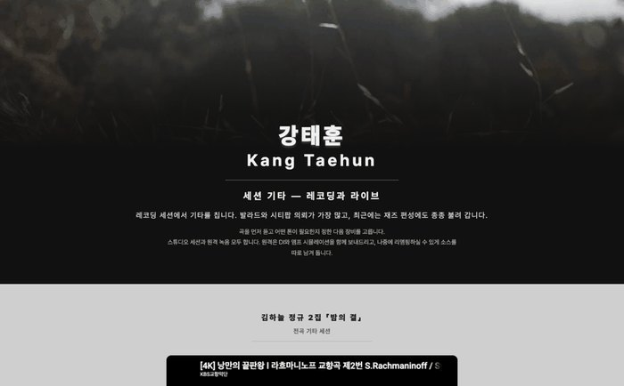
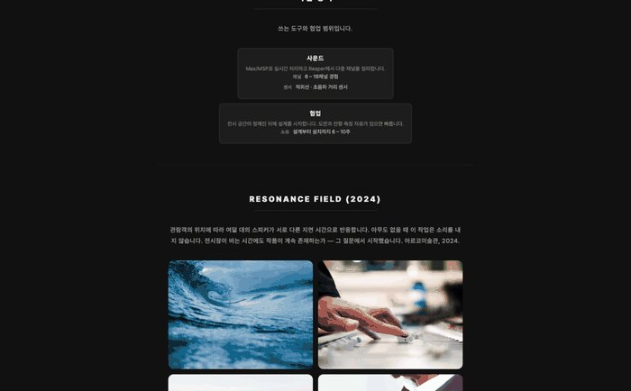
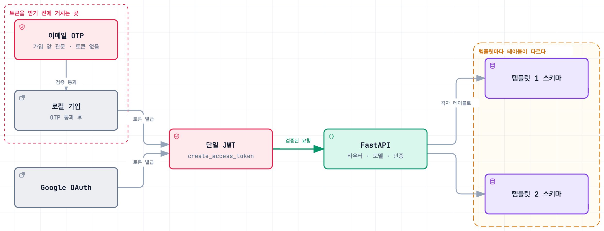

아티스트 홍보 웹사이트
음악 아티스트 프로필 웹 서비스
Impact
- 27개운영 DB에만 있고 모델에 없던 FK CASCADE 드리프트를 규명
- 86건리팩터 전후를 같은 결과로 묶어 둔 pytest 테스트
Background
음악 아티스트는 자기 작업을 모아 보여줄 곳이 마땅치 않습니다. 인스타그램은 흘러가고 사운드클라우드는 음원만 담기고 웹사이트는 직접 만들기 어렵습니다. 코드를 쓰지 않고 자기 페이지를 만들어 공개하는 서비스를 2인 팀으로 만들어 실사용자를 받았습니다.
까다로웠던 부분은 아티스트마다 보여줄 것이 다르다는 점이었습니다. 세션 연주자는 참여 앨범 이력이 중심이고 미디어아트 작가는 전시 사진이 중심입니다.


Architecture

가입 경로는 이메일과 Google OAuth 둘로 갈리고 이메일 쪽에는 OTP 인증이 앞에 붙지만, 그 뒤의 모든 요청은 하나의 JWT로 모입니다. 인증을 지난 다음에야 템플릿 1과 2의 테이블로 다시 갈립니다.
Contributions
템플릿별 정규화 스키마
구조가 가변적이라 JSON 컬럼 하나에 담는 쪽이 가장 간단했습니다. 그렇게 하면 장르별이나 직업별 검색을 붙일 수 없고 템플릿을 바꿀 때 데이터를 옮길 방법도 없어서, 템플릿마다 정규화한 스키마를 만들었습니다.
가입 경로 둘, 토큰 하나
가입 경로가 이메일과 Google OAuth 둘이고, 이메일 가입 앞에는 OTP 인증이 관문으로 붙습니다. 진입은 갈라지되 이후 요청은 전부 하나의 JWT로 처리해서, 인증을 확인하는 코드가 경로마다 갈라지지 않게 했습니다.
템플릿 중복을 서비스 계층으로
profile.py 898줄 가운데 600줄 정도가 템플릿 1과 2의 같은 코드였습니다. 공통 처리를 레지스트리로 묶어 서비스 계층으로 옮기고 라우터를 271줄로 줄였습니다. 옮긴 코드가 새 파일로 들어갔으니 전체 줄 수가 줄어든 것은 아니고, 같은 코드가 두 군데 있던 상태를 정리한 것입니다.
Troubleshooting
빈 데이터베이스에 붙이면 서버가 뜨지 않았다
- 문제
- 서버가 시작될 때마다 테이블 변경과 외래키 재생성이 실행되는 구조라 변경 이력도 롤백 수단도 없었고, 모델 정의와 실제 스키마가 어긋나 있었습니다.
- 원인
- 운영 중인 데이터베이스 하나만 우연히 동작하고 있었습니다.
- 해결
- Alembic으로 옮기면서 자동 생성을 그냥 돌리면 외래키를 전부 삭제하는 마이그레이션이 나옵니다. 운영 스키마를 먼저 뽑아 모델과 대조하고 차이를 하나씩 판정한 다음 이력을 시작했습니다.
- 결과
- 그 과정에서
ON DELETE CASCADE27개가 운영에만 있다는 것을 찾았습니다. 그대로 새 환경을 만들었으면 사용자 삭제가 외래키 위반으로 실패했을 것입니다.
템플릿 2만 쓰는 아티스트가 목록에 나오지 않았다
- 문제
- 카테고리 목록에 템플릿 2 아티스트가 아예 노출되지 않았습니다.
- 원인
- 공개 목록 조회가 템플릿 1 테이블만 보고 있었습니다. 같은 성격의 검색 API는 둘 다 보고 있어서 코드 안에서 기준이 갈려 있었습니다.
- 해결
- 템플릿 중복을 정리하면서 조회 경로도 하나로 합쳤습니다.
- 결과
- 중복을 줄이려고 시작한 작업에서 버그가 같이 잡혔습니다. pytest 86개로 회귀를 막았습니다.